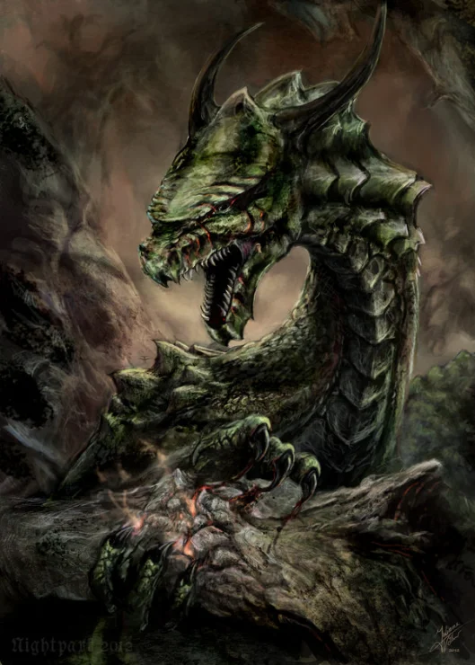

Nessa cultura, também é possível ver forte influência de serpentes nas características físicas dos dragões, eles possuíam corpo alongado, e geralmente um par de patas frontal. Alguns exemplos importantes do ser mágico nessa mitologia são Nidhogg, que fica aprisionado nas raizes de Yggdrasil (árvore divina que sustenta o mundo), e as roí para se alimentar e escapar a tempo para o ragnarok (apocalipse nórdico). E Fafnir. Este era um anão filho de um rei muito rico chamado Hreidmar. Um dia ele decide matar seu pai, junto a seu irmão, Regin, porém ele decide tomar todo o ouro e se torna um dragão.
